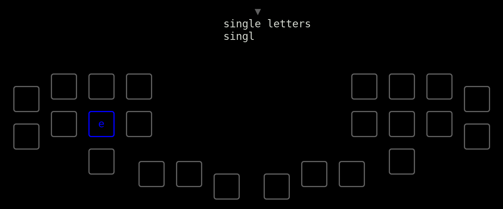
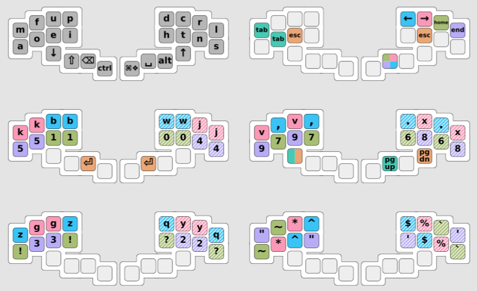

Pipit User Guide
This guide explains how to configure and use the pipit keyboard.
Strategy for getting started
Print a copy of the cheatsheet that shows the locations of commonly-used keys. Install the typing tutor and use it to practice typing letters, numbers, and punctuation. Jump into doing real work using the keyboard as early as you can. It will be slow at first, but that's the best way to improve.
Once you comfortably know the positions of every letter, start chording small words all at once by pressing every letter in the word at the same time: when you want to type "the", line up your fingers over t,h, and e and press them together. If that gives you the wrong word, press command_cycle_word and see if that fixes it. Read the section on words to learn more.
Use the configuration tool to customize the keyboard's dictionary with the words you use most often, add macros for common shortcuts or code snippets, add modes for specific games, or add one-handed modes with hotkeys for a specific program.
Installation
You don't need to install anything to simply use the keyboard - it acts like a normal USB keyboard, and doesn't require any special drivers. Just plug it in and start typing.
If you want to run the typing tutor on your computer or change the keyboard configuration (like to re-arrange keys or add words to the dictionary), then follow these instructions.
Configuration tool and typing tutor
The configuration tool and typing tutor have been tested on Linux and Mac OSX. They might also work on Windows, especially if using the Linux subsystem.
-
Install rust, following instructions from the rust website. Rust 1.27 or later is required.
-
Clone or download the pipit-keyboard repository from github. This repository contains the configuration tool, the typing tutor, and the keyboard firmware.
-
In a terminal, navigate to the
pipit-keyboarddirectory. Run$ cargo buildto download and compile the required rust libraries and the config tool / tutor itself.
Arduino IDE
The Arduino IDE allows you to re-program the microcontroller inside the keyboard, updating the firmware configuration.
-
Install the Arduino IDE. You must install the offline IDE version, instead of using the online "Arduino Create" tool.
-
Install the Teensyduino add-on to the Arduino IDE, to support the
TeensyLCboard used in the keyboard.
Typing Tutor
The typing tutor teaches you the layout of the keyboard. It gives you a line of text to copy, and guides you with a hint showing how to type the next letter.

As you learn each letter, the tutor will stop showing you hints for that letter. If you mis-type a letter, the hint for the correct letter will reappear in blue, and the location of the incorrect letter you actually pressed will appear in red.
Running the tutor
From the pipit-keyboard directory, enter:
$ cargo run -- -t
This will start the tutor using the default settings/settings.yaml file. To use a different file instead, specify it at the end:
$ cargo run -- -t settings/settings_evan.yaml
The tutor will open to a menu. You can use arrow keys to navigate between items in a menu or buttons in a dialog box, and enter to select one. You might be able to click on menu items and buttons as well, but this feature may not be supported by your terminal.
You can quit the tutor at any time by typing ctrl-c, or by selecting Quit in the main menu.
Options
These options are available in the Options menu. All changes will be remembered next time you start the tutor.
Mode
By default, the tutor will assume your keyboard is in default_mode and use that layout to decide where to place the hints. If you want to practice a different mode, you can press enter to show a list of all the modes found in the settings file, and then select the mode you want to use.
Hint Difficulty
This controls how quickly the tutor will stop showing you hints for letters you've learned. Use the left and right arrows to move the slider. Left is easier and right is more difficult. If the slider is all the way to the right, the tutor will only show you a hint once, the first time the letter appears.
Allow Mistakes
By default, the tutor won't let you continue after typing a wrong letter. The wrong letter won't appear on the screen, and the cursor won't move until you try again and type the correct letter. This is helpful when you're first learning the layout, but it can become frustrating when you're typing quickly or practicing chording whole words. Turning on the Allow Mistakes option means that incorrect letters will appear (in red) and you can continue typing past them. After a mistake, the tutor will use a yellow hint to show you where backspace is, in case you want to correct your mistake.
Note:
The tutor has no way to know which physical switches you're actually pressing on the keyboard. All it knows are which letters have been typed. If you mash an unused combination of many switches that doesn't actually type anything, the tutor won't display any red hints. If you accidentally chord a whole word, it will only display a red hint for the last letter in that word.
Similarly, the tutor can't know the true layout of your keyboard, it can only assume the layout matches the settings file you gave it. If you update the settings file without re-loading the new keyboard firmware, or you switch the keyboard's mode without switching to the same mode in the tutor's options menu, then the hints will be incorrect.
Configuring and loading firmware
Running the configuration tool
From the pipit-keyboard directory in a terminal, compile and run the configuration tool by entering:
$ cargo run
This will look for a settings file in the default location, settings/settings.yaml. You can specify a different file instead:
$ cargo run -- settings/settings_evan.yaml
The configuration tool will read the settings file, generate C++ code expressing the desired configuration, and save that code in the pipit-firmware directory. The tool will warn you about possible issues with your choices, like if two mappings conflict with each other, or if the settings contain unused chords or sequences. You can choose to ignore these warnings and load the new firmware anyway, as long as you see that it successfully Saved keyboard configuration to....
For more information, see the chapter on configuration.
Loading the keyboard firmware
After changing settings and running the config tool, you can load the new firmware onto the keyboard.
-
Connect the keyboard to the computer with a USB cable, if it wasn't already plugged in.
-
Launch the Arduino IDE.
-
Open the file
pipit-firmware/pipit-firmware.ino. -
In the menu bar, select
Tools -> Board: -> "Teensy LC". -
Select
Tools -> USB Type: -> "Serial + Keyboard + Mouse + Joystick". -
Select
Tools -> CPU Speed: -> "24 MHz". -
Go to
Tools -> Portand select which port the keyboard is connected to. The port name will vary, but might look something like/dev/cu.usbmodem*on a Mac, or/dev/ttyACM*in linux. You can check by unplugging the keyboard and seeing which entry in the port list disappears. -
Compile and upload the firmware by clicking the round arrow button, or by selecting
Sketch -> Uploadin the menu bar. Look for messages printed in the bottom part of the window. If the upload was successful, you can now use the reconfigured keyboard. If it was not, see the troubleshooting steps below.
Troubleshooting compilation errors:
-
Wrong board_name: Check that you selected the right board in the IDE in step 4, and that it matches theboard_nameoption in your settings file. -
'Keyboard' was not declared in this scope: Check that you selected the rightUSB Typein step 5. -
Error compiling for board Teensy LC, following...ld: region 'FLASH' overflowed by ___ bytes: The configuration is too large to fit on the microcontroller. Try removing unused words, macros, or modes to make space. Disabling unused features likeenable_audio_typing_feedbackcan help save space as well.
Other issues can be reported and discussed using the github issue tracker.
Configuration
The general approach to configuration is:
- Edit files in the
settingsfolder. - Run the configuration tool.
- Load the updated firmware onto the keyboard using the Arduino IDE.
Here are some examples of changes you might want to make.
- add new words to the dictionary
- add a macro that types out your email address
- add a new mode with a one-handed layout full of hotkeys for a drawing program
Terminology
| term | definition |
|---|---|
| key | A single character that can be sent to the computer (including alphabet letters, arrow keys, backspace, ctrl, etc). |
| switch | A physical switch you can press on the keyboard. |
| chord | A combination of one or more switches pressed simultaneously. |
| sequence | A sequence of one or more keys that will be sent to the computer when a particular chord is pressed. |
plain_modifier | A chord that's mapped to one of the following 4 keys: shift, ctrl, alt, gui/windows/❖/cmd/⌘/super |
word_modifier | A chord that's used to modify a word: mod_capital, mod_nospace, etc. |
| anagrams | Two words that would be assigned the same chord by default, causing ambiguity. This can happen because they contain the same set of letters ("the"/"teeth"), or because their letters have overlapping chords: if pressing m + p produces z, then "map" and "zap" are anagrams. |
anagram_modifier | A chord that's used to select one particular anagram of a word: mod_anagram1, mod_anagram2, etc. |
.kmap file | A file that lets you describe which switches are in each chord. |
| mode | A collection of .kmap files used for looking up which sequence to send when a chord is pressed. You can switch between modes while typing (for example, to switch to a one-handed layout). |
Types of mappings
There are four different types of mappings between chords and key sequences. Each is used for a different purpose and reacts differently when modifier chords are pressed at the same time.
Each mapping is given a unique name, like key_a, mod_shift, or macro_email. This name is used both when setting its key sequence (in settings.yaml) and setting its chord (in a .kmap file).
plain_key and plain_modifier
The plain_key group includes most of the keys you'd typically find on a keyboard: letters, numbers, arrow keys, backspace, and so on. Their names all start with key_ (like key_a).
Modifiers like ctrl and shift, however, are in a separate group - they're called plain_modifiers, and their names start with mod_ (like mod_shift).
plain_keys can be modified by any plain_modifier. This means that if you press the chords for key_a and mod_shift at the same time, the keyboard will recognize them both and send capital A.
You should never need to change the sequences for plain_key mappings. They're already defined in settings.yaml, in terms of the all-caps key names used internally by the keyboard firmware (like KEY_A).
You can edit the chords in a .kmap file if you want to re-arrange a mode's layout, or create a new mode. Note that if the mode uses words, changing plain_key chords will also affect the chords for word mappings. See the word section for more details.
Word
Word definitions
Words are defined in the dictionary list in settings.yaml. The chords and key sequences for words are both automatically generated from that definition.
The simplest way to define a word in the dictionary, such as the, is like this:
- {word: "the"}
By default, the chord will be generated by combining the existing plain_key chords mapped to each letter in the word. So in this example, the chord for the consists of the chords for key_t, key_h, and key_e pressed all at once.
This chord-generation approach often causes conflicts, when multiple words would be assigned the same chord - like "the", "teeth", and "thee". We call these conflicting words anagrams, and use anagram_modifiers to select which one we want. You can add up to 15 anagrams for the same chord, and order them in the dictionary such that the words you use most often come first. We can define "the", "teeth" and "thee" like this:
- {word: "the"}
- {word: "teeth", anagram: 1}
- {word: "thee", anagram: 2}
Now you can type "teeth" by pressing the chords for key_t, key_h, key_e, and mod_anagram1 all at once, or type "thee" by pressing them with mod_anagram2. Alternatively, if you forgot to use the correct anagram_modifier, you can press the command_cycle_word chord to delete the last word and replace it with the next anagram in the list. So if you had just typed "the", pressing command_cycle_word once would replace it with "teeth", and pressing it again would replace that with "thee".
Overlapping letters
Anagram conflicts can also happen if two words have different letters, but the chords for those letters overlap. For example, if pressing m + p produces z, then "map" and "zap" are anagrams of each other. When you press all of those switches at once, the keyboard can't know whether you wanted to type an m and a p, or just a z, or some combination of the three.
This also means that if you rearrange individual letters in the keymap, the anagrams will change, and you'll need to edit the anagram numbers in the dictionary list. The pipit-config tool will guide you in this process by pointing out both new anagram conflicts and words that have unnecessarily high anagram numbers left over from old conflicts.
Custom chords and briefs
You can also set custom chords for words - like a stenographer's brief. For example, "different" is a common word that, by default, requires an awkward combination of 7 switches (for d, i, f, e, r, n, and t). The following definition lets you to type it just by pressing d, i, and f, instead:
- {word: "different", chord: "dif"}
This feature is also useful for adding longer phrases that you use frequently:
- {word: "as far as I know", chord: "afi"}
Modifiers
Word chords can be modified only by word_modifiers and anagram_modifiers.
By default, words are automatically preceded by a space, and they're typed out in the same case as they're written in the dictionary (so usually, all lowercase). If one or more word_modifiers are pressed at the same time as the word's chord, they will change that behavior in the following ways:
| modifier | effect |
|---|---|
mod_capital | Capitalize the first letter of the word. |
mod_nospace | Do not type a space before the word. |
mod_shorten | First type backspace to shorten the previous word, then type the new word (without a space before it). You can turn "create" into "creating" by pressing "ing" + mod_shorten |
mod_double | First repeat the last letter of the previous word, then type the new word (without a space before it). You can turn "tap" into "tapping" by pressing "ing" + mod_double. |
mod_anagram1 | Type the first anagram of the word. |
mod_anagram2 | Type the second anagram of the word. |
Cycle commands
If you forgot to use one of the word modifiers above, you can get the same effect by pressing one of these cycling commands immediately after the word. They will delete the word, and replace it with a new version.
| command | effect |
|---|---|
command_cycle_capital | Toggle whether the word's first letter is capitalized. |
command_cycle_nospace | Toggle whether the word is preceded by a space. |
command_shorten_last_word | Go back and shorten the word before the one you just typed. |
command_cycle_word | Cycle between all possible anagrams of a word. This lets you reach higher anagram numbers than you directly type using just mod_anagram1 or mod_anagram2. |
Word movement commands
The keyboard stores a history of the last few words you typed, and lets you move between them, delete them, or edit them (with the cycling commands in the previous section).
| command | effect |
|---|---|
command_delete_word | Delete the word the previous word in the history (by typing the correct number of backspaces) |
command_left_word | Move the cursor to the end of the previous word in the history (by typing the correct number of left arrows.) |
command_right_word | Move the cursor to the end of the next word in the history. |
command_left_limit | Move the cursor to the oldest character in the history. |
command_right_limit | Move the cursor to the newest character in the history. |
For example, say you write the following phrase, using word chords for each word. The | indicates the cursor position.
Coffee with camera and sugar|
You now realize that you meant to say "cream" instead of "camera", but forgot to press the correct anagram modifier. You can fix it by pressing this sequence of commands:
-
command_left_word⮕Coffee with camera and| sugar -
command_left_word⮕Coffee with camera| and sugar -
command_cycle_word⮕Coffee with cream| and sugar -
command_right_limit⮕Coffee with cream and sugar|
Note that the keyboard can't have perfect knowledge of what's on your screen, so the stored history can become invalid if you, for example, use text editor shortcuts, or use the mouse to re-position the cursor. The history is automatically erased whenever you type keys like mod_ctrl that are likely to invalidate the history. There's nothing we can do to prevent mouse movement from invalidating the history, though, so don't try to use history commands after mouse movements. Holding a key long enough to trigger the host computer's key repeat will also invalidate the history.
Macro
macros are similar to words, except that:
macrosequences can contain arbitrary modifiers, likectrl.macrosequences are not automatically prefixed withspace.macrochords are not automatically generated - you pick them yourself, and write them in a.kmapfile.macrochords cannot be modified by any kind of modifier. If you press a modifer at the same time, the chord will not be recognized as amacro.
There are two different ways of writing a macro's key sequence in settings.yaml.
Simple definition method
The first method is to simply write out the text as you want it to appear:
macro_email: "me@example.com"
macro_hash_bang: "#!/bin/bash"
There are a few special symbols that can appear in the text and have the following meanings:
| symbol | key | unicode |
|---|---|---|
\n | key_enter | |
\t | key_tab | |
\" | key_doublequote | |
\\ | key_backslash | |
← | key_left | U+2190 |
↑ | key_up | U+2191 |
→ | key_right | U+2192 |
↓ | key_down | U+2193 |
◀ | key_home | U+25C0 |
▶ | key_end | U+25B6 |
Here are some examples of macro definitions that use special symbols:
macro_vim_save: ":w\n"
macro_in_paren: "()←"
macro_in_doublequote: "\"\"←"
macro_if_c: "if(){\n}↑▶←←"
Advanced definition method
If you want a macro sequence to include modifiers like ctrl or other non-printing keys like
escape, you'll need to use a second method, where you specify each keypress separately.
macro_save_as:
- {key: "KEY_S", mods: ["MODIFIERKEY_CTRL", "MODIFIERKEY_SHIFT"]}
macro_save_and_quit:
- {key: "KEY_S", mods: ["MODIFIERKEY_CTRL"]}
- {key: "KEY_Q", mods: ["MODIFIERKEY_CTRL"]}
macro_emacs_save:
- {key: "KEY_X", mods: ["MODIFIERKEY_CTRL"]}
- {key: "KEY_S", mods: ["MODIFIERKEY_CTRL"]}
macro_emacs_insert_euro:
- {key: "KEY_X", mods: ["MODIFIERKEY_CTRL"]}
- {key: "KEY_8"}
- {key: "KEY_8", mods: ["MODIFIERKEY_SHIFT"]}
- {key: "KEY_E", mods: ["MODIFIERKEY_SHIFT"]}
Each keypress is on a separate line, in curly brackets, and includes a key, a mod list, or both. The mod list can contain the following names:
| mods | |
|---|---|
| MODIFIERKEY_CTRL | |
| MODIFIERKEY_SHIFT | |
| MODIFIERKEY_ALT | |
| MODIFIERKEY_GUI | A.K.A. windows key (❖), apple command key (⌘), or super |
and key can be any of the following names:
| KEY_A | KEY_B | KEY_C | KEY_D |
| KEY_E | KEY_F | KEY_G | KEY_H |
| KEY_I | KEY_J | KEY_K | KEY_L |
| KEY_M | KEY_N | KEY_O | KEY_P |
| KEY_Q | KEY_R | KEY_S | KEY_T |
| KEY_U | KEY_V | KEY_W | KEY_X |
| KEY_Y | KEY_Z | KEY_1 | KEY_2 |
| KEY_3 | KEY_4 | KEY_5 | KEY_6 |
| KEY_7 | KEY_8 | KEY_9 | KEY_0 |
| KEY_ENTER | KEY_ESC | KEY_BACKSPACE | KEY_TAB |
| KEY_SPACE | KEY_MINUS | KEY_EQUAL | KEY_LEFT_BRACE |
| KEY_RIGHT_BRACE | KEY_BACKSLASH | KEY_NUMBER | KEY_SEMICOLON |
| KEY_QUOTE | KEY_TILDE | KEY_COMMA | KEY_PERIOD |
| KEY_SLASH | KEY_CAPS_LOCK | KEY_F1 | KEY_F2 |
| KEY_F3 | KEY_F4 | KEY_F5 | KEY_F6 |
| KEY_F7 | KEY_F8 | KEY_F9 | KEY_F10 |
| KEY_F11 | KEY_F12 | KEY_PRINTSCREEN | KEY_SCROLL_LOCK |
| KEY_PAUSE | KEY_INSERT | KEY_HOME | KEY_PAGE_UP |
| KEY_DELETE | KEY_END | KEY_PAGE_DOWN | KEY_RIGHT |
| KEY_LEFT | KEY_DOWN | KEY_UP | KEY_NUM_LOCK |
| KEYPAD_SLASH | KEYPAD_ASTERIX | KEYPAD_MINUS | KEYPAD_PLUS |
| KEYPAD_ENTER | KEYPAD_1 | KEYPAD_2 | KEYPAD_3 |
| KEYPAD_4 | KEYPAD_5 | KEYPAD_6 | KEYPAD_7 |
| KEYPAD_8 | KEYPAD_9 | KEYPAD_0 | KEYPAD_PERIOD |
Command
Commands are used for calling functions in the firmware, like to delete the last word, or switch to a different mode. The chord is defined in a .kmap file, the command name is defined in settings.yaml, and the behavior is defined in the doCommand() function at the top of pipit-firmware/Pipit.cpp.
Command chords cannot be modified by any kind of modifier.
Kmap file format
A .kmap file contains blocks of characters that visually represent chords. In each block, the first line gives the name of a mapping (as defined in settings.yaml). The following lines show which switches must be pressed to trigger that mapping. The * symbols represent pressed switches and the . symbols represent un-pressed switches.
key_h
.... ....
.... *...
. .
... ...
Multiple blocks can be put on the same lines, in adjacent columns.
Lines beginning with # are comments and will be ignored. You can give a block the name blank_mapping if it's not currently being used for a mapping, but you don't want to delete it or comment it out.
# This is a comment.
key_0 key_2 key_4
.... .... .... .... .... ....
.... **.. .... .**. .... ..**
. . . . . .
... ... ... ... ... ...
There must be at least one blank line between blocks. There must not be any blank lines in the middle of a block. If there are multiple columns of blocks on the same lines, there must be at least one whitespace character separating each of the names on the first line. Whitespace (other than newlines) within the lines of dots has no effect - it is allowed anywhere and required nowhere.
If your text editor supports cutting and pasting rectangular regions of text, that's a convenient way of moving blocks around.
An emacs mode providing syntax highlighting for .kmap files is available in pipit-mode.el.
Modes
Modes let you switch between multiple layouts on-the-fly, without re-loading your keyboard firmware.
Here are examples of extra modes you might want to create, in addition to the default_mode:
- A mode that puts photoshop hotkeys under your left hand, to use while you operate the mouse with your right hand.
- A one-handed typing layout that lets you access the whole alphabet with either hand.
- Gaming modes that have layouts optimized for particular games, and act like a conventional keyboard instead of a chording keyboard when you press multiple switches at once.
- Windows mode: If your
default_modehas macros that send Mac shortcuts, you can create another mode that overrides just those macros to send the Windows shortcuts instead, or vice versa.
Configuring modes
The settings.yaml file has a modes: list, where each entry is the name of a mode followed by information about it:
modes:
default_mode:
keymaps:
- {file: "settings/keymaps/dvorak24.kmap", use_words: true}
windows_mode:
keymaps:
- {file: "settings/keymaps/windows_shortcuts.kmap"}
- {file: "settings/keymaps/dvorak24.kmap", use_words: true}
gaming_mode:
keymaps:
- {file: "settings/keymaps/gaming_test.kmap"}
gaming: true
Keymaps
The first piece of information you to need to give about a mode is which keymap file(s) it uses. All modes draw from the same set of sequences defined in the settings file. The difference between modes is in which chord (if any) they assign to each of those sequences.
If you list multiple keymaps for a mode, like in the windows_mode example, keymaps higher up in the list will override the ones below.
windows_mode:
keymaps:
- {file: "settings/keymaps/windows_shortcuts.kmap"}
- {file: "settings/keymaps/dvorak24.kmap", use_words: true}
Let's say that dvorak24.kmap assigns a certain chord to macro_save_as (which sends ⌘-shift-s), and windows_shortcuts.kmap assigns the same chord to macro_windows_save_as (which sends ctrl-shift-s). Now, pressing that chord while in windows_mode will trigger macro_windows_save_as, while all other chords act just the same as they would in default_mode. This makes it simple to toggle between Mac and Windows-style shortcuts by switching modes.
For each .kmap file you list, you can say whether you want to use this keymap to generate word chords. If you add use_words: true, then the chords for the alphabet letters in this keymap will be combined together to create a chord for every word in the dictionary. If you add use_words: false or just leave it blank, no word chords will be generated.
You'll probably only have one .kmap file that's suitable for generating word chords - in this case, it's dvorak24.kmap. It needs to have a chord for each letter in the alphabet, and the anagram numbers in the dictionary need to be carefully chosen to avoid conflicts caused by those particular letter chords. So it wouldn't make sense to try using the same dictionary with two different keymaps.
Gaming
After listing a mode's keymap files, you can specify whether it's a special gaming mode by adding gaming: true.
gaming_mode:
keymaps:
- {file: "settings/keymaps/gaming_test.kmap"}
gaming: true
This changes how the keyboard handles multiple presses. Chording keyboards don't normally work well for gaming. If you're using wasd keys for movement, you'd want to be able to move diagonally by pressing w and d together. This keyboard, however, would treat that combination as a totally different chord, and unless you had manually defined that chord, it would just send nothing. Setting gaming: true fixes this: pressing w and d will send both w and d at the same time, like a conventional keyboard.
This of course means that all the chords used in a gaming mode can only contain a single switch. Multiple-switch chords won't be detected.
Switching modes
The keyboard will always start in default_mode after powering on. You switch to a mode using a command, like command_windows_mode or command_default_mode.
If you create a new mode, you'll also have to manually create a command for switching to that mode. First, if your mode is called my_new_mode, give your command a name like command_my_new_mode, and add the name to the commands: list in settings.yaml. Next, assign it a chord in whichever keymap files you want to be able to access this mode from.
Finally, edit the firmware to tell it what to do when this command is triggered. Open pipit-firmware/Pipit.cpp, and scroll down to where it says /**** Add cases for new commands here! ****/, somewhere around line 18. Add a new block of lines that looks like this, replacing the command name and mode name with your own, but in ALL CAPS:
case conf::command_enum::COMMAND_MY_NEW_MODE:
mode = conf::mode_enum::MY_NEW_MODE;
break;
In the future, this process will be simplified, so that you won't need to edit the firmware to create a new mode.
Options
The following options are available in settings.yaml.
Timing options
These timing options control how the firmware recognizes switch presses and releases as chords.
| Option | Description | Required? | Value |
|---|---|---|---|
chord_delay | How quickly all the switches in a chord must be pressed for them to be recognized as a single chord. Increase it if you often fail to press whole chords at once. Decrease it if you often type too quickly and accidentally combine separate presses into a single chord. | Required | Milliseconds |
held_delay | How long a switch must be held down before it will be reused in future chords. | Required | Milliseconds |
debounce_delay | How long a switch must stay down (or up) to be considered a real press (or release), and not an accidental bounce. | Required | Milliseconds |
Examples of timing options
This timing diagram shows a few examples of switch-pressing scenarios, to illustrate the meanings of the different delay options. Assume that pressing one switch sends p, pressing another sends m, and pressing them both at once sends z.
keys |
sent: | timer name: states of switches and timers over time:
________|________________________________________________________________
| |-m----|
m |
| debounce_delay <...>
________|________________________________________________________________
| |m|
(none) |
| debounce_delay <...>
________|________________________________________________________________
| |-m----------|
| |-p---|
z |
| chord_delay <..........>
| held_delay <.........................>
________|________________________________________________________________
| |-m------------------|
| |-p---|
mp |
| chord_delay <..........>
| held_delay <.........................>
________|________________________________________________________________
| |-m----------------------------------|
| |-p---|
mz |
| chord_delay <..........>
| held_delay <.........................>
________|________________________________________________________________
Note that the chord_delay and held_delay timers reset after every new switch is pressed. This reset is not shown in the diagrams, because it's not relevant to these examples. It does mean that if you're pressing a large chord with many switches, you don't need to press all of them within chord_delay milliseconds - you just can't wait longer than that in between any two presses.
Hardware options
The correct values of these options are determined by the keyboard's hardware. They should not be changed, unless you are building/modifying your own keyboard harware.
| Option | Description | Required? | Value |
|---|---|---|---|
board_name | The name of the microcontroller board used inside the keyboard. | Required | TEENSY_LC, FEATHER_M0_BLE |
row_pins | The microcontroller pins connected to each row in the switch matrix, split up by hand. | Required | |
column_pins | The microcontroller pins connected to each column in the switch matrix, split up by hand. | Required | |
kmap_format | The format of the chord blocks in the .kmap files. Each pair of numbers represents the row and column pins of one switch. The number of switches on each line must match the number of dots on each line of the kmap blocks. | Required. | |
rgb_led_pins | The microcontroller pins connected to the red, green, and blue channels of a RGB LED, if one is present. | Optional, LED disabled by default | [pin, pin, pin] |
battery_level_pin | The microcontroller pin used to sense battery voltage, if a battery is present. | Optional, battery sensing disabled by default | pin |
use_standby_interrupts | Use interrupts to detect presses instead of polling the switches. Interrupts are preferred, but require hardware support and may not be available for all boards and pin assignments. | Optional, default true | true or false |
Other options
| Option | Description | Required? | Value |
|---|---|---|---|
debug_messages | How much debugging info to send over the serial connection. Messages can be viewed in the Arduino serial monitor. | Optional, default None | None, Some, All |
output_directory | Where to save the auto-generated .cpp/.h files containing the firmware configuration. | Optional, default pipit-firmware | path |
word_space_position | Whether to automatically add space to the beginning or end of chorded words, or not at all. Recommended value is Before. | Optional, default Before | Before, After, None |
enable_led_typing_feedback | If true, flash the LED when a unrecognized chord is typed. | Optional, default false | true, false |
enable_audio_typing_feedback | If true, send a short serial message whenever a chord is typed. The host computer can listen for this message and produce a sound (see audio) | Optional, default false | true, false |
Cheatsheet
If you modify a mode's layout or create a new mode, you might want to generate a new cheatsheet that illustrates the layout.

The cheatsheet is made up of a grid of many keyboard images. Typically, all the chords consisting of just a single switch should be shown together on one keyboard. Groups of multi-switch chords can be shown together on other keyboard images, as long as the chords don't overlap with each other too much. Each chord should have at least one switch that's not shared with any other chord in the group - otherwise, there's nowhere to put the label for that chord.
You're responsible for deciding how to group the chords in the cheatsheet.
Writing the config file
First, create a .yaml file that describes which chords to show on which keyboard images. See settings/cheatsheet/cheatsheet.yaml for an example.
Each entry in the keyboards: list describes one of the keyboard images. If the entry looks like this,
- chord_names:
- "key_a"
- "key_c"
- "key_d"
# ...and so on...
then each of those chords will be shown in that keyboard image.
If the entry looks like this instead:
- null
then there will be a blank space in the grid where that keyboard would have gone.
Generating the cheatsheet
After writing the config file (called my_new_cheatsheet.yaml in this example), pass the file name to the config tool like this:
$ cargo run -- -c settings/cheatsheet/my_new_cheatsheet.yaml
This will generate a vector graphics file called my_new_cheatsheet.svg that can be opened in programs like Inkscape or Illustrator. If a file called my_new_cheatsheet.svg already exists, you'll be prompted to confirm before overwriting it.
As usual, you can instead specify a non-default settings file at the end of the command:
$ cargo run -- -c settings/cheatsheet/my_new_cheatsheet.yaml settings/settings_evan.yaml
If you see an error about Missing ___ from 'cheatsheet symbol lookup', that means you need to specify what symbol/text will be used to label that chord on the cheatsheet. You can do that by opening src/cheatsheet/cheatsheet.rs and editing the get_symbol() function at the end of the file.